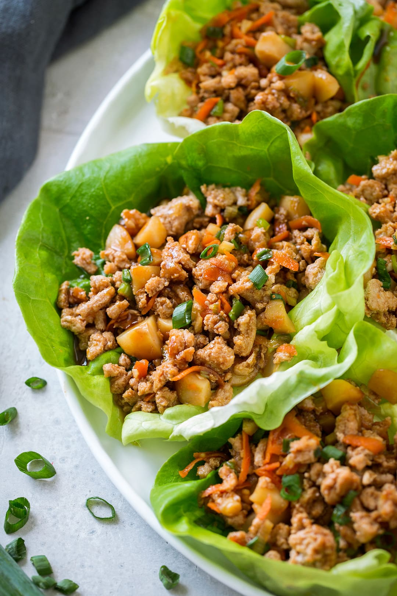

PF Chang's Lettuce Wraps Recipe

Description
This is the healthiest recipe you'll find on this website. They're pretty
easy to make (I hope) and make you feel like you're having fine dining at Lenox Mall!
What more could a person want?
Ingredients
- 1 tbs olive oil
- 1 lb ground chicken
- 2 cloves garlic, minced
- 1 onion, diced
- 1/4 cup hoisin sauce
- 2 tbs soy sauce
- 1 tbs rice wine vinegar
- 1 tbs freshly grated ginger
- 1 tbs Sriracha
- 1 (8 oz) can whole water chestnuts, drained and diced
- 2 green onions, thinly sliced
- Kosher salt and freshly ground black pepper, to taste
- 1 head butter lettuce
Steps
- Heat olive oil in a saucepan over medium high heat. Add ground chicken and cook until browned, about 3-5 minutes, making sure to crumble the chicken as it cooks; drain excess fat.
- Stir in garlic, onion, hoisin sauce, soy sauce, rice wine vinegar, ginger and Sriracha until onions have become translucent, about 1-2 minutes.
- Stir in chestnuts and green onions until tender, about 1-2 minutes; season with salt and pepper, to taste.
- To serve, spoon several tablespoons of the chicken mixture into the center of a lettuce leaf, taco-style.
Source:
Link